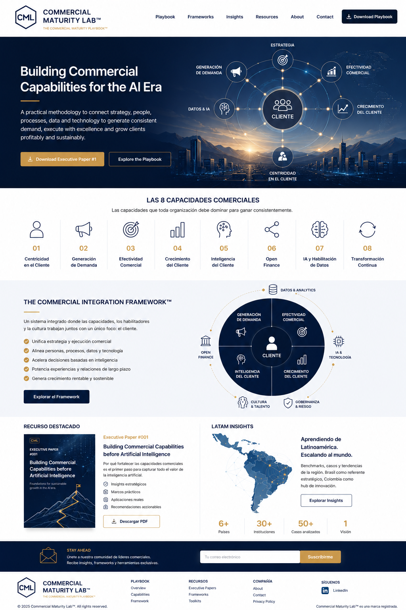
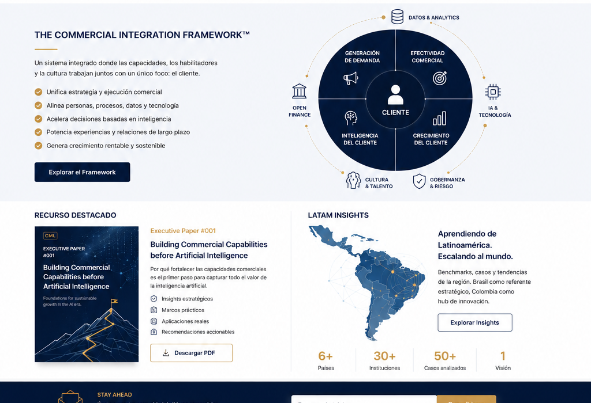

Construyendo capacidades comerciales para la era de la IA.
Un espacio independiente sobre transformación comercial, IA y experiencia de cliente.
Leer artículo
Commercial Maturity Framework™

Executive Insight #001
La IA no corrige una operación comercial inmadura.
La tecnología no reemplaza capacidades comerciales. Un CRM no sustituye un proceso, ni la IA corrige un forecast sin gobierno. Primero se diseñan las capacidades; después la tecnología las escala.